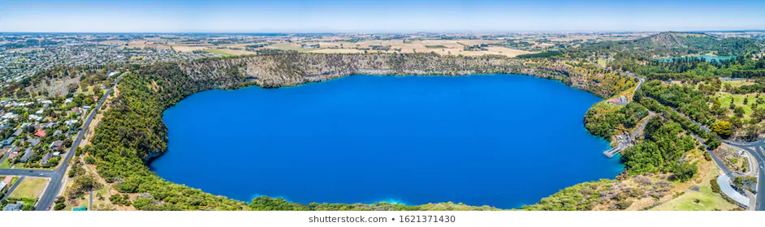

<!DOCTYPE html>
<html lang="en">
<head>
    <meta charset="UTF-8">
    <meta http-equiv="X-UA-Compatible" content="IE=edge">
    <meta name="viewport" content="width=device-width, initial-scale=1.0">
    <link rel="stylesheet" href="css/style.css">
    <title>Document</title>
</head>
<body>
    <!-- position property -->
    <!-- <section>
        <div class="box">
            
            <div class="cover"></div>
            <div class="bg-wrapper">
                <h5>title</h5>
                <h1>Exploring the Curonian Spit</h1>
                <p class="text">The Curonian Split is a 98 km long, thin, curved sand-dune spit that separates the Curonian Lagoon
                    from the Baltic See coast. Its soutern portion lies within Kaliningrad Oblast, Russia and its northern within southwestern Lithuania.
                    It is a UNESCO World Heritage Sits shared by the two countries.
                </p>
                <button>send</button>
            </div>
        </div>
    </section> -->
    <!-- background image -->
    <!-- <div class="bg-image">
        <div class="bg-wrapper">
            <h5 class="title-h5">title</h5>
            <h1>Exploring the Curonian Spit</h1>
            <p class="text">The Curonian Split is a 98 km long, thin, curved sand-dune spit that separates the Curonian Lagoon
                from the Baltic See coast. Its soutern portion lies within Kaliningrad Oblast, Russia and its northern within southwestern Lithuania.
                It is a UNESCO World Heritage Sits shared by the two countries.
            </p>
            <button>send</button>
        </div>
    </div> -->
    <!-- animation-block -->
    <div class="animation-block"></div>
</body>
</html>